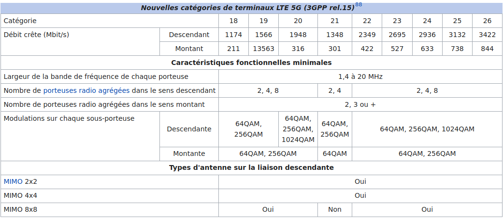
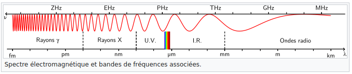

Le 12 mai 2013, Samsung a annoncé avoir testé pour la première fois avec succès des techniques de sa future offre de réseaux 5G qu'il prévoit pour 2020, avec des débits de données d'un Gbit/s (1 gigabit par seconde) et pouvant aller dans le futur jusqu'à 10 Gbit/s84,85,86. En 2015, le Centre de l’université du Surrey, en Grande-Bretagne, a annoncé avoir réussi à atteindre un débit d'un Tbit/s87[source insuffisante] (1 térabit par seconde) sur des fréquences supérieures à 6 GHz. La même année, le centre mathématiques et algorithmiques de Huawei à Paris propose 5 technologies permettant des débits compatibles avec les pré-requis de la 5G : Le F-OFDM (Filtered OFDM) pour la forme d'onde, le SCMA (Sparse Code Multiple Access) pour la technique d'accès, les codes polaires (pour le codage des différents types de paquets), le MU-MIMO massif (pour le système d'antennes avec des techniques de précodages non-linéaires) et enfin le full duplex radio (qui combine les modes TDD et FDD). L'ensemble de ces technologies ont permis de démontrer lors d'essais en extérieur à Chengdu avec NTT DoCoMo en Chine en octobre 2015 des efficacités spectrales en liaison descendante de 50 bit/s/Hz et une capacité multipliée par 3 en liaison montante sur des fréquences inférieures à 6 GHz. La 5G permettra théoriquement de télécharger un film de 33 Go en 4K (UHD) en moins de 10 secondes
Catégories de terminaux mobiles
MU-MIMO Lors du test de Huawei, le système multi-utilisateur MIMO (MU-MIMO (en)) a pris en charge jusqu'à 24 utilisateurs et 24 couches de transmission parallèles sur une même ressource temporelle de fréquence. Les tests ont démontré que le système MU-MIMO peut atteindre un débit moyen de 3,6 Gbit/s par cellule sur une bande passante de 100 MHz, soit près de dix fois les performances obtenues avec un système de base LTE. L'essai a confirmé l'intégration optimale de ces nouvelles technologies radio, ainsi que le potentiel des technologies flexibles d'interface radio 5G. Ces tests ont également été l'occasion de procéder à une évaluation des risques techniques, qui vient étayer le travail actuel de normalisation du 3GPP.
Ondes millimétriques en 5G Le nom d'ondes millimétriques désigne toutes les composantes présentes dans le spectre de fréquence entre 30 et 300 GHz. Les ondes millimétriques font partie des ondes radio. L'utilisation d'ondes millimétriques est jusqu'à présent restreinte aux applications d'intérieur et aux faisceaux hertziens. L'une des raisons de cette restriction repose sur le fait que les ondes millimétriques subissent plus d'affaiblissement de propagation. Vu que la formule de Friis (le calcul peut être établi ici89) indique que les pertes de propagation en espace libre sont proportionnels à la fréquence, l'utilisation des ondes millimétriques à l'extérieur pose un défi important. Le terme millimétrique met en relief l'aspect longueur d'onde.
Full Duplex Le mode full-duplex a fait l'objet de tests lors de la première phase des essais 5G. D'après les premiers tests, ce mode permet la transmission et la réception simultanées des données au niveau de la station de base, avec trois niveaux de technologie en cascade, à savoir l'annulation analogique passive, l'annulation analogique active et l'annulation numérique. Les tests ont prouvé que le Full-Duplex permet d'optimiser l'annulation des auto-interférences de plus de 113 dB en situation réelle, ce qui assure une augmentation de 90 % du débit du système par rapport aux modes half-duplex traditionnellement utilisés.